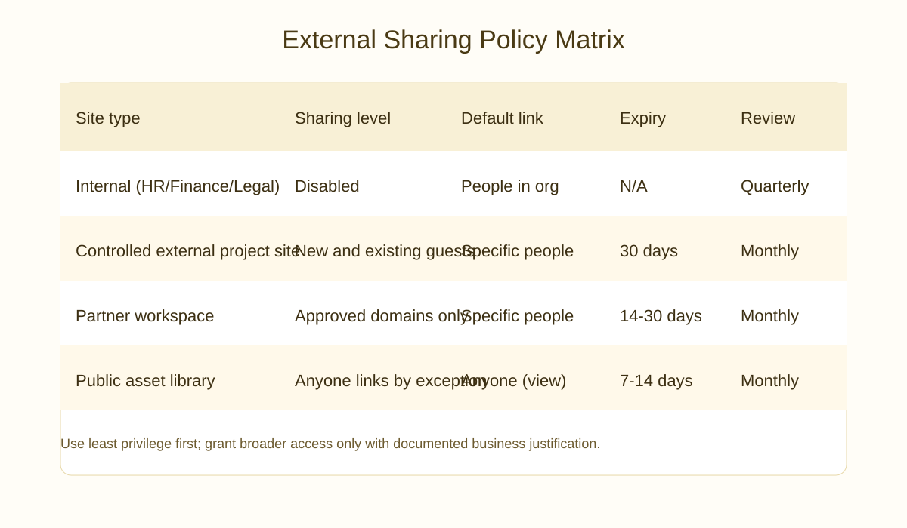

Table of Contents
What is Microsoft Scout?
Microsoft Scout is an always-on personal AI agent integrated across Microsoft 365 applications, designed to keep work grounded in your daily flow. Scout understands your work context, anticipates needs, and takes proactive actions within your approved applications—all while remaining transparent about its activities.
Unlike task-specific AI features, Scout provides continuous assistance across Outlook, Teams, SharePoint, Word, Excel, and PowerPoint, learning from your work patterns to deliver increasingly personalized support.

Enterprise Benefits of Scout Adoption
Productivity Gains
- Reduced Context-Switching: Scout proactively surfaces relevant information without leaving your current application
- Automated Routine Tasks: Email sorting, meeting preparation, document summarization
- Meeting Intelligence: Pre-meeting prep, real-time note-taking, action item extraction
- Workload Consolidation: Scout aggregates information across teams and projects
Organizational Benefits
- Knowledge Retention: Scout captures institutional knowledge as it observes workflows
- Faster Onboarding: New employees benefit from Scout's learning of team processes
- Reduced Silos: Scout can connect information across departments and teams
- Data-Driven Insights: Aggregate Scout interactions reveal organizational patterns
Employee Satisfaction
- Reduced email overload and meeting fatigue
- More time for strategic work vs. administrative tasks
- Improved work-life balance through automation
- Career development through AI-suggested learning opportunities
Strategic Adoption Framework

Phase 1: Assessment (Weeks 1-4)
- Stakeholder Interviews: Engage IT, Security, HR, Business Units to understand needs and concerns
- Readiness Assessment: Audit current Microsoft 365 maturity, data governance, and security posture
- Pilot Planning: Identify 2-3 departments for pilot program (50-100 users)
- Policy Framework Development: Draft initial governance policies with legal and security teams
Phase 2: Pilot Program (Weeks 5-12)
- Limited Rollout: Deploy Scout to pilot departments with close monitoring
- User Training: Conduct weekly workshops on Scout capabilities and responsible use
- Feedback Loops: Weekly pulse surveys and bi-weekly feedback sessions
- Incident Tracking: Document and resolve any issues immediately

Phase 3: Expansion (Weeks 13-24)
- Staged Rollout: Expand to 50% of organization in waves of 500-1000 users
- Champions Program: Identify power users in each department to support peers
- Advanced Features: Gradually enable more Scout capabilities based on maturity
- Policy Refinement: Update governance framework based on pilot learnings
Phase 4: Optimization (Week 25+)
- Full Deployment: Scout available to all licensed users organization-wide
- Continuous Improvement: Monthly optimization reviews and feature adoption tracking
- Advanced Integrations: Connect Scout with line-of-business applications (CRM, ERP)
- ROI Measurement: Quantify productivity gains and employee satisfaction improvements
Security and Governance Framework
Data Privacy Principles
- Encryption: All Scout interactions encrypted in transit and at rest
- Access Controls: Scout respects existing Microsoft 365 permission model
- Data Residency: User data stored in tenant's configured geographic region
- No External Sharing: Scout data never leaves your Microsoft 365 environment by default
Compliance Alignments
Scout aligns with major compliance frameworks:
- GDPR (right to be forgotten, data portability)
- HIPAA (if deployed in healthcare; audit logging required)
- FedRAMP (if using sovereign cloud regions)
- SOC 2 Type II certified infrastructure
Security Controls
- Multi-Factor Authentication: Enforce for all users with Scout access
- Conditional Access: Restrict Scout to corporate networks or approved VPNs
- Audit Logging: Enable comprehensive audit logs for all Scout actions
- Threat Detection: Use Microsoft 365 threat protection to monitor anomalies
Sensitive Data Handling
- Scout excludes content labeled as confidential or highly restricted by default
- Custom sensitivity labels can restrict Scout access to specific data types
- DLP policies can prevent Scout from processing PII or regulated information
- Information barriers restrict Scout cross-team data visibility for separated groups
Deployment and Rollout Execution
Prerequisites
- Microsoft 365 Copilot Pro licenses or Enterprise Copilot licenses
- Exchange Online mailbox for each user
- Teams and SharePoint provisioned (even if not heavily used)
- Azure AD tenant with modern authentication enabled
Enabling Scout Organization-Wide
- In Microsoft 365 admin center, go to Settings > Copilot and AI
- Select "Microsoft Scout" and enable for organization
- Configure data residency if needed (EU, UK, or US)
- Set default privacy level (recommended: restrictive initially)
- Review audit log settings and retention policy
Configuring Security and Compliance
- Set Conditional Access policies for Scout usage
- Create custom sensitivity labels if needed
- Configure DLP rules for regulated content types
- Enable audit log search for Scout activities
- Configure retention policies for Scout interaction logs
User Enablement
- Create communication plan explaining Scout benefits and privacy
- Publish Scout quick-start guides per application (Teams, Outlook, Word)
- Record video tutorials for common use cases
- Set up help desk ticketing category for Scout issues
- Conduct optional training sessions for interested users
Pilot Program Setup
- Create Azure AD security group for pilot participants
- Use conditional access to restrict Scout to pilot group initially
- Assign a pilot program manager to coordinate feedback
- Schedule weekly check-ins with pilot participants
- Document lessons learned for expansion phases
Monitoring and Optimization
Key Metrics to Track
- Adoption Rate: % of licensed users actively using Scout weekly
- Feature Usage: Which Scout features used most (suggestions, summaries, automation)
- User Satisfaction: NPS score and qualitative feedback from surveys
- Support Tickets: Issues reported and resolution time
- Compliance Events: Policy violations or security incidents detected
Audit Logging and Monitoring
- Enable Search-UnifiedAuditLog for Scout activities in PowerShell
- Create alerts for suspicious Scout usage patterns (mass data access, off-hours activity)
- Monthly review of audit logs with security team
- Archive Scout logs per organizational retention policies
Continuous Improvement
- Monthly Reviews: Analyze adoption metrics and identify barriers
- Quarterly Training: Advanced Scout workshops based on feedback
- Feature Expansion: Gradually enable new Scout capabilities as users mature
- Integration Roadmap: Connect Scout to line-of-business applications
Organizational Policy Framework
Sample Scout Acceptable Use Policy
Purpose: Establish guidelines for responsible and secure use of Microsoft Scout personal AI agents.
Scope: All employees and contractors with Microsoft Scout access.
- Scout can assist with work-related tasks within Microsoft 365 applications
- Scout should not process personal or non-business information
- Users should not attempt to bypass security or data loss prevention policies
- Scout interactions are subject to organizational audit and monitoring
Data Handling Requirements
- Scout respects all existing access controls and permissions
- Information Scout processes follows the same classification as source documents
- Regulated data (PII, PHI, financial) is excluded from Scout analysis by default
- Users may not export Scout-generated content outside Microsoft 365
Escalation and Incident Response
- Scout policy violations reported to Security team immediately
- Suspected data breaches involving Scout require formal incident response
- Users violating Scout policies subject to disciplinary action
- Scout access may be disabled for non-compliant users pending investigation
Frequently Asked Questions
- Is Scout always monitoring my work?
- Scout activates when you ask it for help or when it detects it can provide proactive assistance. It doesn't passively monitor all your activities by default.
- Can I opt out of Scout?
- Users can disable Scout in their individual Microsoft 365 settings. However, IT admins can enforce Scout deployment organization-wide as needed.
- Does Scout work offline?
- No, Scout requires internet connectivity and Microsoft 365 cloud services. It doesn't work with locally cached or offline content.
- What happens to Scout data if I leave the company?
- Scout data is tied to your user account. When your account is deleted, Scout data is deleted per standard Microsoft 365 retention policies (typically 90 days).
- Can Scout access my email archives?
- Scout can access your mailbox within the retention period set by organizational policy. It respects folder permissions and deleted item recovery limits.
- Is there an additional cost for Scout?
- Scout is included with Microsoft 365 Copilot licenses. No additional per-user licensing required beyond your existing Microsoft 365 subscription.
- How does Scout handle multi-tenant scenarios?
- Scout only operates within your licensed tenant. It cannot access content from other organizations or shared multi-tenant environments.
Ready to Deploy Microsoft Scout?
Download our Scout Adoption Checklist and Security Policy Template to accelerate your enterprise deployment.
Download Adoption Resources